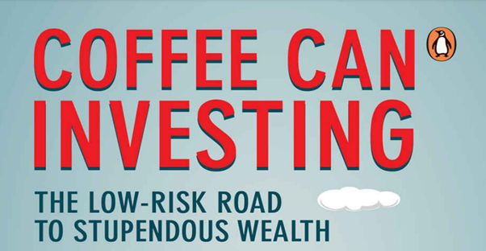
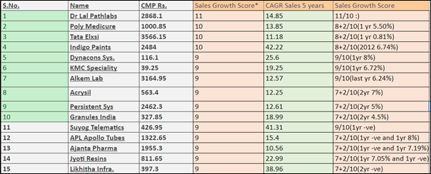
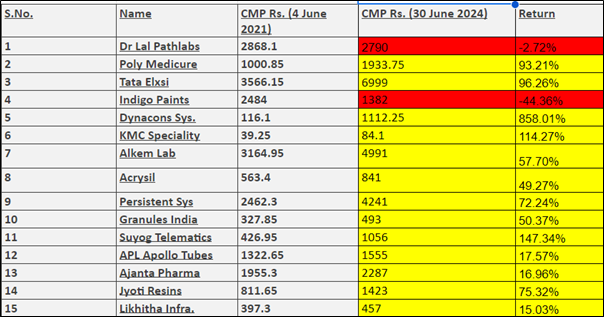

If you've read about it, you've surely given it a thought. And so did I.

In all probability, if you’ve reached this blog, then you have a fairly decent idea of Coffee Can Investing. But for people who have not heard of this, I shall brief you.
Coffee Can Investing is a style popularized by a book written by Saurabh Mukherjea, Rakshit Ranjan (Investment managers at Marcellus Investment Managers) and Mr. Pranab Uniyal.
It is an investment strategy that involves selecting high-quality stocks and holding them for a long time. The book basically defines a parameter-based-framework for selecting
stocks for specifically the Indian market and claims that an equally-weighted portfolio of these stocks outperforms the index across all time periods. (based on historical data).
Here are the parameters:
1. Above Rs 100 crore market capitalization.
2. Over the preceding decade have grown sales each year by at least 10 per cent.
3. Generating Return on Capital Employed (pre-tax) of at least 15 per cent each year.
To any one new into trading and investing, this sounds very very interesting. The reason being, that this approach is easy. It eliminates one of the biggest problems in investing,
that is what to invest in, in a very seamless manner by giving you a set of instructions to follow. This is exactly what I felt back in 2021, when I first read this book and saw
a dozen interviews by the authors of these books. All this sounded too good to be true, specially with all the attention it was getting and so based on this framework, I decided to
conduct a small research.
I ran the above mentioned filters on screener.in to see which companies can satisfy these, and to see if this easy method actually even works. (there were a few exceptions I made
in the filters to account for demonetization and COVID-19 which are explained in the sheet)
This is thesheet which I had made then, and now 3 years down the line, I feel it’s an appropriate time to re-visit it once.
Mind you, I did make a few modifications to the framework, by including a point-system, the basis of which are also explained in the sheet.
These were the companies that got a score of 9/10 and above.

Now, for the fun part. From 4 June 2023 – 30 June 2024, Nifty 50 yielded a total return of 53.22%, while the CCP Portfolio yielded a return of 107.76%!!

You know the meaning of this, basically the outperformance was massive.
I am still not in total support of blindly following a screen and investing totally based on it. Mind you, this result might be heavily influenced by the fact that in 2021 we had
just come out of a huge crash and that the market is almost at an ATH as of now.
This was an interesting research that I had thought of back in 11th grade and it surely yielded interesting results.
According to me, the Coffee Can Criteria’s are actually on the stricter side, and so, you can use them to filter out “bullshit” companies and it seems to be very helpful in identifying
smaller but robust companies early (before the market does - timing the market you know 😉) like it did with Poly Medicure, Dynacon Sys and KMC Speciality.
Let me know your take on this approach!